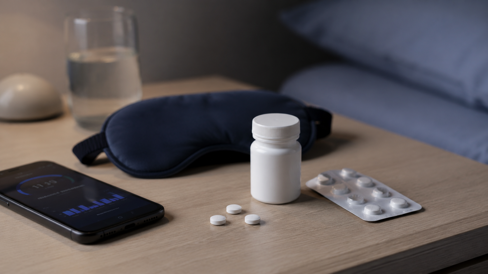
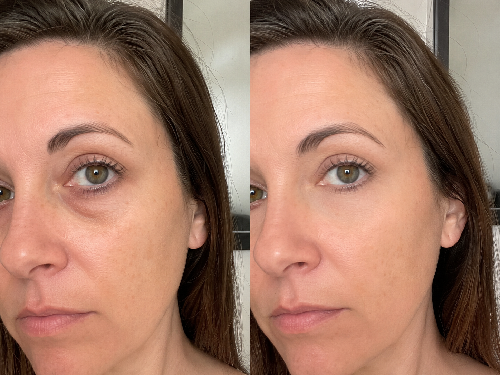
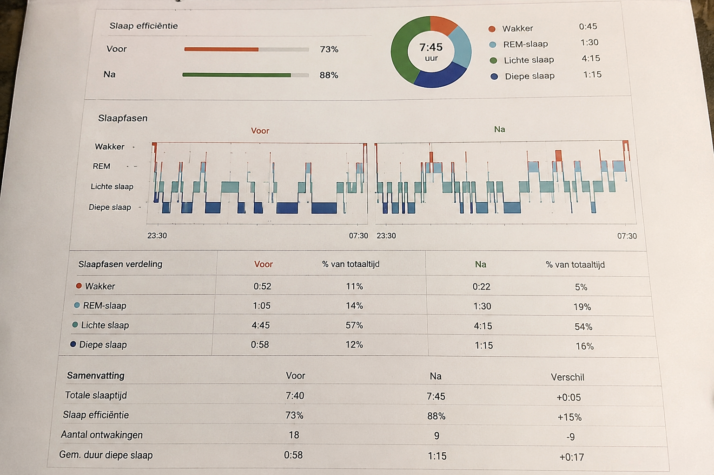

Elke week spreek ik mensen in hun 50s, 60s en 70s die vastzitten in dezelfde onmogelijke situatie.
Ze liggen 's nachts wakker. Ze zijn overdag uitgeput. En ze weten niet meer waar ze moeten beginnen.
De huisarts geeft slaappillen — of verwijst door naar een slaapcentrum met een wachtlijst van 6 tot 12 maanden.
Privéklinieken en slaapcoaches vragen €1.500 tot €2.500 voor een behandeltraject.
Bol.com staat vol met goedkope melatonine, slaapmaskers en apps voor €15. Meestal werkt het een week. Dan niet meer.
Intussen draaien ze de verwarming harder omdat ze 's nachts kou hebben. Ze zeggen nee tegen uitjes. Ze stoppen met dingen die ze leuk vonden — omdat ze simpelweg te moe zijn.
Na 30 jaar dit zien besloot ik iets te doen.
Ik heb alle verschillende slaapopties gekocht, onderzocht en getest. Op echte mensen. Over zes maanden.
Dit is wat ik vond.
De huisarts en het slaapcentrum
Het is gratis (of bijna). De technologie in een slaapcentrum is degelijk — ze meten alles wat er te meten valt.
Maar je wacht 6 tot 18 maanden voordat je überhaupt terechtkunt. Als je eenmaal binnen bent, krijg je vaak slaapmiddelen voorgeschreven. Temazepam. Zolpidem. Melatonine in hoge dosering.
Ik schreef deze jarenlang voor. Ik weet precies wat er gebeurt: ze werken de eerste twee weken. Daarna bouw je tolerantie op. Je wordt afhankelijk. En je slaapprobleem is erger dan ooit — alleen nu met bijwerkingen erbij.
De meeste mensen stoppen ermee. Of ze leggen de recepten in een la en proberen het zelf.
Privéklinieken, slaapcoaches en wellnesscentra
Bij een privékliniek betaal je gemiddeld:
- Slaapcentrum Amsterdam: €1.890
- Slaap Instituut Nederland: €2.340
- Premium slaapcoach (8 sessies): €2.500+
Na 30 jaar in dit vak kan ik u precies vertellen waarvoor u betaalt.
De daadwerkelijke kosten om iemand te helpen met slaaponderzoek en een persoonlijk plan? Ongeveer €80 tot €100 aan materiaal en tijd per patiënt.
De rest van die €2.000?
Huur van het pand. Receptionistes. Commissies voor coaches die premium pakketten aanraden — want ze verdienen er een percentage op. Regiomanagers. Hoofdkantoor. Televisiereclames.
En dan de verborgen kosten die niemand noemt:
- Opvolggesprekken: €75 per keer
- Extra supplementen: €40 tot €90 per maand
- Intakegesprek: €99 (alleen al om te mogen komen)
- Herbeoordeling: €250 tot €400
Over tien jaar betaalt u bijna €5.000 — voor iets dat €100 kost om uit te voeren.
Ik heb mijn hele carrière mensen zien kiezen tussen hun verwarming en hun slaap. Dat maakte me ziek.
Bol.com, drogist en goedkope apps

Dan is er de goedkope route. Melatonine voor €8. Een slaapmasker voor €12. Een meditatie-app voor €60 per jaar.
De meeste daarvan doen één ding: ze maskeren het symptoom. Geen enkele lost het onderliggende probleem op — uw circadiaan ritme dat volledig uit balans is.
Ik heb tientallen van deze producten getest. De resultaten waren voorspelbaar: kort effect, dan niets.
Voor en na het gebruik maken van de tips van Dr. Joachiem van Blievaden

Donkere kringen en een vermoeide blik verdwenen binnen drie weken — zonder pillen, zonder kliniek.


Testresultaten van de e-cursus en e-books van Dr. Joachiem van Blievaden
Gemeten bij een deelnemer na 21 dagen het volgen van de complete methode — inclusief de e-cursus en alle drie de e-books:

Gemiddelde resultaten na 21 dagen bij deelnemers die de volledige bundel volgden (e-books + e-cursus). Individuele resultaten kunnen variëren.
Wat duizenden mensen sinds mijn onderzoek melden
Sinds ik mijn bevindingen publiceerde, hoor ik van duizenden mensen die de Slaap Beter Slapen bundel hebben geprobeerd. Dezelfde dingen komen steeds terug:
Mijn aanbeveling

Ik raad de Slaap Beter Slapen bundel aan — drie e-books én de complete e-cursus van Dr. Joachiem van Blievaden, met zijn totale gids om weer te slapen zoals vroeger: diep, onvergetelijk en uitgerust.
Samen met 12 andere slaapartsen — waaronder voormalige Harvard-onderzoekers — bundelde hij alles wat hij zijn patiënten adviseert in één pakket.
Geen abonnement. Geen slaapmiddelen. Geen wachtlijst van 12 maanden.
Gewoon wetenschappelijk bewezen methodes die uw circadiaan ritme herstellen — in uw eigen tempo, thuis, voor minder dan de prijs van één fles melatonine per maand.
Slaap Beter Slapen — Compleet Pakket
3 e-books + e-cursus Dr. Van Blievaden · Direct geleverd per e-mail
- Slaap Beter Slapen — de complete gids
- De 7 Gouden Slaapregels
- Snel Inslaap Methode
- E-cursus Dr. Joachiem van Blievaden — de totale gids naast de e-books
44% korting — tijdelijk aanbod
Claim mijn prijs nu →30 dagen geld-terug-garantie · Geen vragen gesteld
U bent al op zoek naar een oplossing — anders had u dit niet gelezen. De vraag is niet óf u iets moet doen. De vraag is of u nog maanden wilt wachten, of vandaag begint.
Pad 1: Sluit deze pagina. Blijf wakker liggen. Blijf moe. Betaal over een jaar alsnog €2.000 bij een kliniek.
Pad 2: Bestel vandaag voor €17. Probeer het 30 dagen risicovrij. Sluit u aan bij duizenden Nederlanders die eindelijk weer door slapen.
Bekijk beschikbaarheid →